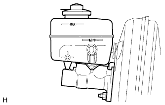

ТОРМОЗНАЯ ЖИДКОСТЬ (для моделей с вакуумным усилителем тормозной системы) > ПРОВЕРКА БЕЗ СНЯТИЯ С АВТОМОБИЛЯ
для подготовки
Нажмите здесь
1. ПРОВЕРЬТЕ УРОВЕНЬ ТОРМОЗНОЙ ЖИДКОСТИ В БАЧКЕ

Проверьте уровень жидкости и, при необходимости, долейте ее.
Тормозная жидкость:
SAE J1703 или FMVSS № 116 DOT3
УКАЗАНИЕ:
Долейте жидкость в бачок до отметки MAX.